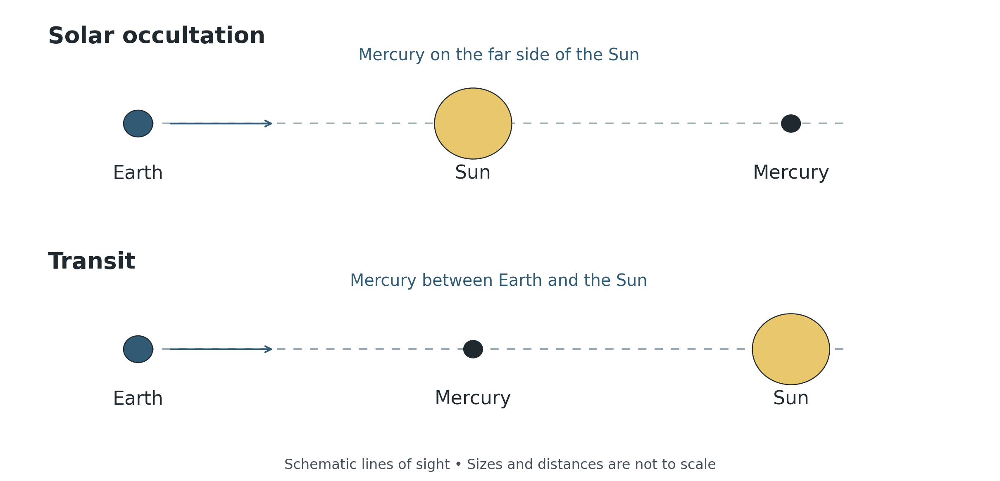
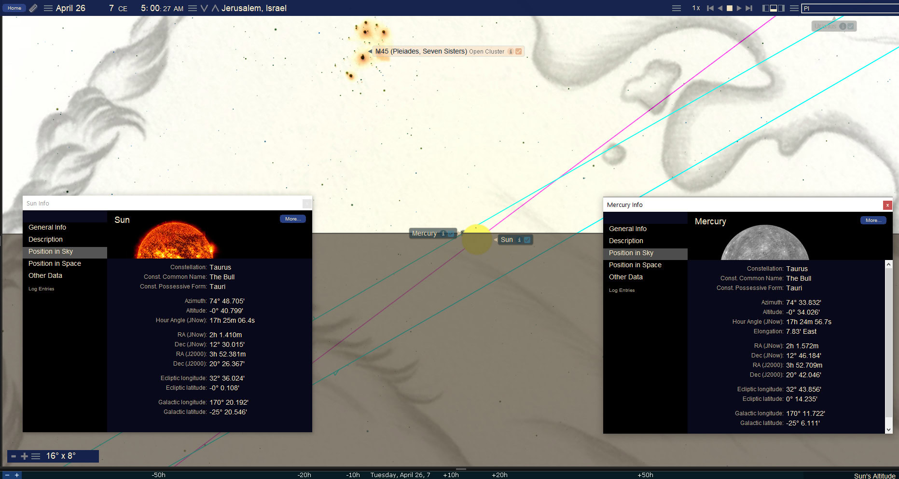
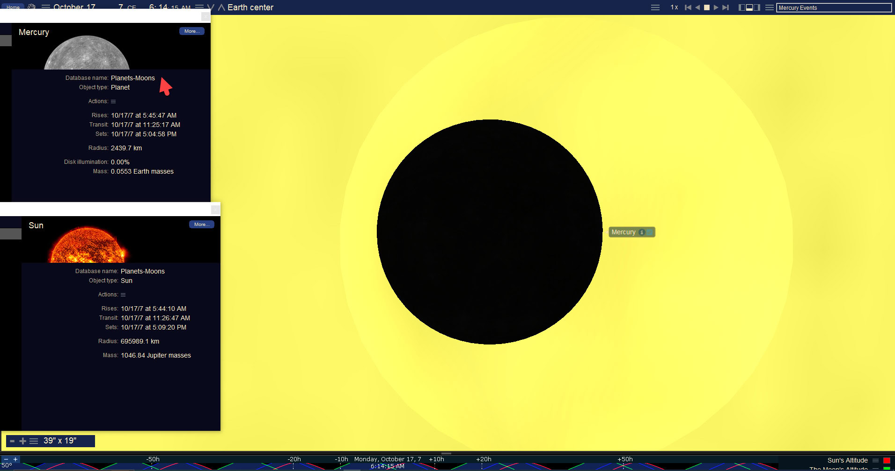
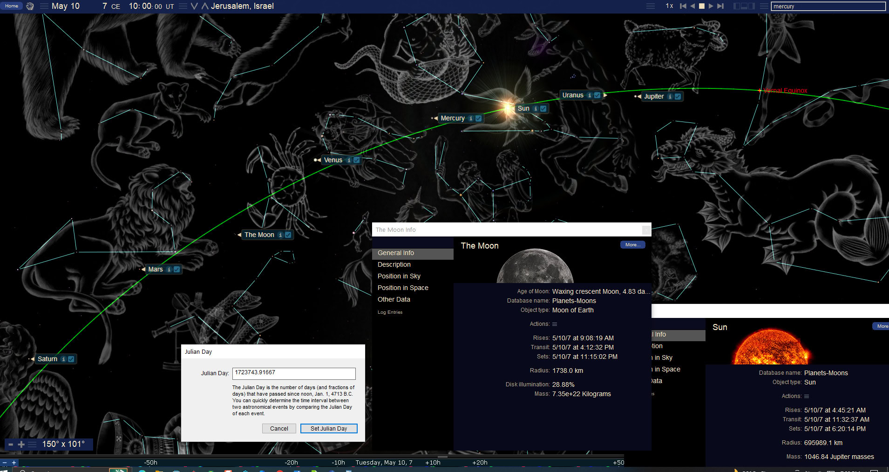
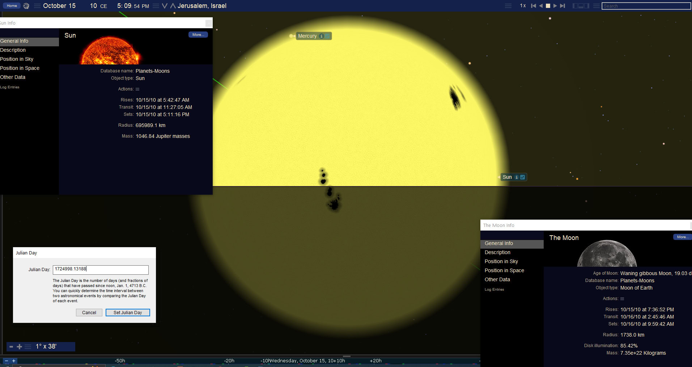
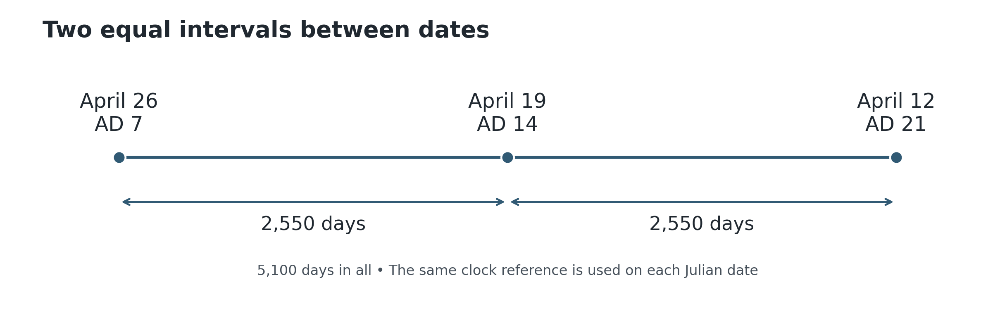

The Messenger and the King
Book 2 · Celestial Signs of the First Advent · Chapter 8
The planets beside the pilgrimage seasons
“Behold, I will send My messenger, who will prepare the way before Me. Then the Lord whom you seek will suddenly come to His temple—the Messenger of the covenant, in whom you delight—see, He is coming,” says the LORD of Hosts.
Malachi 3:1, BSB
Malachi brings the messenger, the Lord, and the Temple into one announcement. His book also names the LORD as the great King and speaks of the sun of righteousness rising with healing in its wings. These are the scriptural images through which I approach the planetary sequence in this chapter.[1]
The sequence begins in AD 7. Mercury approaches Jupiter in the spring, passes behind the Sun, and later crosses in front of it. Further spring and autumn encounters carry the comparison through AD 14 and AD 21. Jupiter adds a slower recurrence that reaches the summer following the AD 33 Passion. I read these movements beside the coming of Christ, Israel’s pilgrimage seasons, and the King’s claim upon the nations.
The life of Christ on earth and the witness of heaven belong to the same work of God. I am reading their relation from the heavenly perspective, where an event can bear witness without an ancient observer noticing it. A planet concealed by the Sun can belong to that witness as readily as one shining in the night.
What the planetary names mean
The messenger association has a biblical point of contact in Acts 14. The crowd at Lystra calls Barnabas Zeus and Paul Hermes because Paul is the chief speaker. Zeus and Hermes are the Greek names associated with Jupiter and Mercury in the Roman vocabulary. The apostles reject the attempted worship and direct the crowd to the living God who made heaven and earth.[2]
That rejection matters to my reading. The names belong to the nations’ world, but the lights belong to their Maker. Mercury’s swift movement supplies a messenger image; Jupiter supplies a royal image. Neither planet becomes a god, and neither governs the life of Christ.
Malachi’s language also needs care. Jesus identifies the messenger who prepares the way with John the Baptist. The same prophecy then speaks of the Lord coming to His Temple as the Messenger of the covenant. The precursor and the Lord are distinct. I use Mercury for announcement and attendant service, while reading the surrounding scene beside the coming that is announced. I do not assign every appearance of a messenger to the same person.[3]
The Sun and Jupiter can therefore serve different aspects of the Christ-centered reading: the light that rises and the King who rules. Scripture itself can speak of Christ as Lamb and Lion without requiring the two images to perform the same task. The question is what each comparison shows in its setting.
Passing behind the Sun and crossing in front
Mercury’s orbit lies inside earth’s orbit. At a superior conjunction it is on the far side of the Sun; at an inferior conjunction it is between earth and the Sun. These terms describe the arrangement, but neither conjunction automatically produces a crossing of the Sun’s disk.
An actual solar occultation occurs when the Sun covers Mercury from the chosen viewpoint. A transit occurs when Mercury crosses the bright solar face in front. In either case the alignment must be close enough in latitude as well as longitude. A near conjunction can miss the disk entirely.[4]


That distinction lets us describe the action before interpreting it. Concealment behind the Sun and passage across its face are different events. Both can belong to the proposed messenger comparison, but the words should tell the reader which one actually occurs.
The dates below are Julian. Where a local clock matters, I use Jerusalem local mean solar time, abbreviated LMT. It follows longitude rather than a modern time zone. The quoted minute values are model results for a smooth horizon; they are not recovered observations of the ancient skyline.[5]
The spring sequence in AD 7
The first encounter considered here is on March 6, AD 7, when the Moon covers Mercury. In the Jerusalem model, the central part occurs below the horizon. Mercury reappears from behind the Moon after rising, at about 05:27 LMT, while the Sun is still below the horizon. The whole event should not be described as a fully visible occultation above Jerusalem.[6]
On April 18, Mercury passes close to Jupiter in Aries. The geocentric minimum separation is about 2.24 arcminutes, or 134 arcseconds. These are angles on the sky, not seconds of elapsed time. Four days later Mercury approaches Uranus to about 3.6 arcminutes. That additional geometry belongs to the wider heavenly view; it does not require an ancient identification of Uranus as a planet.[7]
On April 26, Mercury passes behind the Sun. The Jerusalem model places the end of the disk overlap near 05:18 LMT and sunrise near 05:20. Mercury’s calculated rising follows the Sun’s by about 42 seconds. The Sun and Mercury rise almost together, with Mercury just emerging from the solar disk. The end of occultation and the rising of the bodies are separate calculations.[8]
I read the dawn scene beside Malachi’s sun of righteousness and its healing wings. The Pleiades higher in the supplied field add another familiar scriptural association. The constellation artwork supplies a visual setting, while the surrounding solar glow is a software rendering. The plate does not record someone seeing the physical corona or Mercury at sunrise.


The comparison also brings us to Luke’s account of Jesus in the Temple. His parents go to Jerusalem for Passover; on the return journey they assume He is in their company. They return to search for Him and find Him among the teachers after three days. Luke’s word for the traveling company, synodia, supplies the caravan image used below.[9]
I place the spring sequence beside that account within the historical 6 BC framework. At the corresponding season in AD 7, the civil year-label interval is 6 + 7 − 1 = 12 years. This comparison uses the historical anchor already distinguished from the received December 25, 1 BC framework. Luke gives Jesus’ age but does not identify April 26 as the day He was found. The three days come from Luke’s narrative; the planetary comparison does not recover their civil dates.[10]
The autumn transit and the 400 day frame
On October 17, AD 7, Mercury crosses in front of the Sun. This is a true transit. The geometry reverses the spring encounter: the messenger passes before the solar face after having been concealed behind it.
The transit is still in progress after Jerusalem sunrise in the adopted model and ends around 08:56 LMT. The supplied close view shows Mercury’s dark silhouette against the bright solar background. Mercury is only about 10 arcseconds across; the Sun is about 32 arcminutes across. This is a highly magnified view of a small part of the Sun, whose limb lies outside the field.[11]


The next spring encounter comes on April 9, AD 8, when Mercury again passes behind the Sun. From the named date of the lunar occultation on March 6, AD 7 to this closing date, the frame is exactly 400 days. Its successive date intervals are 51 + 174 + 175 = 400. The solar encounters alone, April 26 to April 9, span 349 days. The 400-day statement includes the earlier lunar event.[12]
I read the spring–autumn–spring action beside Israel’s recurring summons to appear before the LORD. Zechariah 14 carries that summons to the nations: they go up to Jerusalem to worship the King and celebrate Tabernacles. The transit supplies the image of a messenger before the Sun in the autumn pilgrimage season. Its exact Hebrew day requires the calendar test that follows.[13]
Which feast days do the dates support
A Julian date does not become a Hebrew feast day simply because a planetary event occurs on it. The month’s beginning must be established, and in spring the intercalation rule must also be stated. A conjunction and an observed first crescent are different starting points.
For a concrete test, let day 1 begin at the first Jerusalem sunset after astronomical conjunction. The following daylight period belongs to day 1. This is a conjunction-based example, not a reconstruction of an ancient court’s first-crescent decisions. It gives the following day numbers for several dates used in the comparison:[14]
| Julian event date | Preceding conjunction date at Jerusalem | Day under this rule | Earlier proposed label |
|---|---|---|---|
| April 26, AD 7 | April 6 | 20 | Nisan 18 |
| October 17, AD 7 | September 30 | 17 | Tishri 15 |
| October 15, AD 10 | September 26 | 19 | Tishri 17/18 |
| April 19, AD 14 | April 18 | 1 | Nisan 30 |
These are day numbers within a lunation; the example does not independently decide the month’s name. A first-crescent rule can shift the beginning later, and weather or an intercalation decision introduces further questions. It still has to explain each proposed label. The AD 14 event occurs about a day after conjunction and belongs to the new month under this example. A Nisan 30 identification would have to come from a different, explicitly defined month-start rule.
I therefore keep the spring and autumn pilgrimage comparisons while leaving the disputed exact feast days conditional. This also keeps the native solar calendar distinct from the lunar example. A solar festival label needs its own year anchor and day boundary; it cannot repair a lunar label without saying that the calendar has changed.
A planetary caravan
The supplied May 10, AD 7 view gathers the Sun, Moon, and planets along the ecliptic. This is the planetary caravan in the proposed reading. At the printed 10:00 UT reference, the conventional seven lights occupy an arc of about 130 degrees, from Jupiter toward Saturn. The diagram is a sky reconstruction, with daylight suppressed so the relationships can be examined.[15]


The image lets the eye follow a company spread across the sky. I place that company beside Luke’s pilgrims without claiming that the members were equally spaced or simultaneously visible to unaided eyes. Uranus is also labeled in the software view; it is an additional geometric member, not one of the conventional seven lights counted here.
From April 26 at 03:01 UT to the May 10 plate at 10:00 UT, the elapsed interval is 14 days, 6 hours, 59 minutes. That is approximately two weeks between the dawn reference and the caravan scene.[16]
A further supplied caravan scene belongs to August 4, AD 10. Its Moon lies in Libra, Venus in Virgo, and Jupiter in Leo under modern constellation boundaries. From the May 10, AD 7 date to August 4, AD 10 is 1,182 days. Forty reference mean lunar months are about 1,181.22 days. The dates therefore give an approximate forty-month comparison, rather than exactly forty lunations or forty months fixed by a celestial procession. The selected August sample is about 72 date-days before October 15; an exact countdown to Tabernacles would also need the feast’s established starting sunset.[17]
The evening counterpart in AD 10
Mercury returns behind the Sun on October 15, AD 10. The modeled solar-disk passage ends around 17:25 Jerusalem LMT, a few minutes before sunset near 17:31. The calculated Mercury and Sun setting times differ by only about four seconds in this model.


This supplies an evening counterpart to the April AD 7 dawn scene. One encounter ends near the rising Sun; the other ends near its setting. The close rise and set times express the shared horizon geometry. They do not make the end of disk overlap identical to sunrise or sunset, and their few-second difference is not a claim of historical clock precision.[18]
The span from the stated April 26, AD 7 dawn reference to the October 15, AD 10 sunset is about 1,268.5 days. It is about 8.5 days longer than 1,260 and about 1.3 days shorter than 43 reference mean lunar months. I read its spring-to-autumn setting across three years and roughly half of another beside the prophetic half-week. The measured interval retains its own length; it is not renamed an exact 1,260-day period.[19]
Mercury’s orbital tilt explains why such disk encounters occur in seasonal groupings. A transit requires Mercury to be near a crossing of earth’s orbital plane as well as between earth and the Sun. Those alignments change their seasonal placement over long periods. The recurrence and the slow seasonal drift are both parts of the same clock.
Seven years and a second seven
The next central date is April 19, AD 14. Mercury again passes behind the Sun. At Jerusalem sunrise it is still within the solar disk; the Moon is about a day old. This scene belongs near new Moon and must remain distinct from the AD 14 lunar eclipses discussed in Chapter 7.[20]
Three dates now make an exact division:


The middle date lies 2,550 days after April 26, AD 7 and 2,550 days before April 12, AD 21. The complete named-date interval is 5,100 days. The equalities compare the same clock reference on each date. The actual conjunction minima do not divide the physical interval into two exactly equal halves.
The recurrence is approximately seven years on each side, with roughly 22 Mercury synodic cycles in each seven-year step. The 2,550-day intervals are distinct from seven schematic 360-day years, which total 2,520 days. They do not by themselves locate a historical sabbatical year. I read the seven-and-seven arrangement beside Joseph’s two periods of seven years and the wider Jacob–Joseph imagery already used in this book.[21]
The later cluster also has a spring–autumn–spring outline, but its geometry is not identical to the first one. On April 27, AD 20, Mercury passes just outside the Sun’s disk: the minimum center separation is about 16.92 arcminutes, exceeding the roughly 15.81 arcminutes required for the limbs to meet. It is a close superior conjunction, not a solar occultation. The autumn encounter is a real transit, peaking on October 18 UT, which is October 19 LMT at Jerusalem; it takes place there during the night. On April 12, AD 21, Mercury again passes behind the solar disk.[22]
I retain this second group as a recurrence with a changed opening. Its place in the heavens does not depend on visibility from Jerusalem, but the near miss should remain a near miss. The numerical midpoint does not require six identical disk crossings.
Jupiter and the later royal sequence
Jupiter’s slower return adds a royal cadence beside Mercury’s messenger movements. Four selected superior conjunctions occur in the June-solstice season:
| Year | Julian date of minimum in UT | Days from the preceding selected minimum |
|---|---|---|
| 4 BC | June 11 | — |
| AD 9 | June 16 | About 4,387.86 |
| AD 21 | June 21 | About 4,387.72 |
| AD 33 | June 25/26 boundary | About 4,387.78 |
Each selected minimum places Jupiter behind the solar disk. Their intervals are about twelve years, with a small forward movement through June. The sequence does not say that Jupiter meets the Sun only once every twelve years, or that these four events occur at the exact solstice.[23]
The AD 33 encounter reaches minimum around midnight UT at the June 25/26 boundary, about 02:20 LMT on June 26 at Jerusalem, before sunrise. It follows the May 15 planetary scene used in Book 1’s construction of forty full days after Resurrection Sunday. Mercury and Jupiter occupy Gemini in that scene, while Acts 28 supplies a separate biblical reference to the Twins as the figurehead of Paul’s ship. The comparison is pictorial; Acts does not identify that ship with the planetary event.[24]
Using the named dates, April 3 to May 15 is 42 days, and May 15 to June 26 is another 42. The actual Jupiter minimum occurs before the equal noon reference on June 26. From noon UT on May 15 it is about 41.5 days; from noon UT on April 3 it is about 83.5 days. Thus 42 + 42 is a rounded and date-based arrangement around the physical event, not two measured intervals of exactly 42 days.[25]
I read the kingly planet entering the Sun’s light beside Revelation 19, where an angel stands in the Sun and the rider brings judgment. The recurring imagery belongs to the same heavenly perspective as the earlier messenger scenes. This is also a forward connection to Jerusalem’s judgment and the summons to the nations. It does not turn a planetary conjunction into the historical date of the Temple’s burning.
The messenger and the King lead us back to Malachi’s announcement. The Lord comes to His Temple, and the nations are called to honor Him. I look at the planetary movements from within that claim. Their recurrence, concealment, and passage before the Sun supply the visible geometry through which I read the larger witness, including its unseen parts.
The next chapter turns from these planetary movements to the solar-eclipse sequence and the proposed reading of the First and the Last.
Source notes
1. Malachi 3:1, 1:14, and 4:2, BSB. The opening quotation preserves the translation’s wording. Malachi 4:2 prints “sun of righteousness”; its footnote gives a capitalized alternative. The visual comparison does not establish an ancient constellation interpretation of Malachi. Return
2. Acts 14:11–18, especially verses 12 and 15. The crowd’s Zeus/Hermes naming and the apostles’ rejection are both part of the passage. The planetary use is an additional symbolic reading of that Greco-Roman vocabulary, not Paul’s endorsement of the gods. Return
3. Matthew 11:7–15; Malachi 3:1. Keep John the Baptist, the announced Lord, and the Messenger of the covenant clauses distinct. A proposed image of announcement is not a fixed one-planet/one-person code. Return
4. NASA’s Mercury transit explanation defines the geometry; that catalog covers AD 1601–2300 and is not cited as a catalog of the ancient dates. The chapter’s ancient events are recomputed with Swiss Ephemeris, explicit Moshier, with thirteen angular checks against official compressed DE431-based files at the same TT instants. All differ by less than 0.1 arcsecond in those checks. The packaged scripts record their settings and source hashes. Lower-precision exploratory engines are not used to decide grazing disk contact. Return
5. Jerusalem reference: 35.235° E, 31.778° N, elevation 754 m. LMT = UT + 2h20m56.4s. Swiss Ephemeris supplies the stated historical ΔT model. Rise/set values use upper limbs, estimated standard pressure, 15°C, and a smooth zero-degree horizon. Refraction, terrain, solar-limb definition, and Earth-rotation uncertainty prevent historical second-level claims. Disk contacts use separately calculated angular limbs. A dated noon JDN verifies a named civil date; it does not guarantee that a different local instant has that date. Return
6. March 6, AD 7 Jerusalem lunar occultation: modeled first contact about 04:33 LMT below the horizon, maximum about 04:59 below it, final contact about 05:27 at Mercury’s geometric altitude about 1.24°. Mercury rises about 05:19, Sun about 06:26. These are modeled opportunities, not a visibility report; extinction near the horizon remains a separate issue. Return
7. April 18 Mercury–Jupiter geocentric minimum: about 04:05 UT, 134.21″, both IAU Aries; solar elongation about 9.31°. April 22 Mercury–Uranus minimum: about 10:58 UT, 215.27″ = 3.59′, both IAU Aries. The source image’s “3.5 seconds” must not be restored as 3.5 arcseconds. At the April 18 minimum the Sun is already above Jerusalem’s horizon. Return
8. April 26, AD 7 minimum separation about 13.09′. Topocentric final external contact about 05:18 LMT; Sun rise about 05:20:29, Mercury rise about 05:21:11. The roughly 42-second rise difference is distinct from the roughly 2.5-minute contact-to-sunrise difference. Supplied IMG0150 retains its software clock, not a relabeled LMT clock. Artwork and displayed glow do not establish an observed coronal shape or a Mercury sighting. Return
9. Luke 2:41–51. BSB prints “twelve years old” and “after three days”; the chapter preserves these as narrative statements, while its calculations use digits. Greek συνοδία in verse 44 denotes the traveling company. See the Greek text of Luke 2:44. The pictorial caravan analogy is the author’s. Return
10. Current File 13, §§0.2–0.5 and 6–7, preserves the historical 6 BC hinge, coordinated conception/pre-existent classifications, received birth/covenant framework, and preferred AD 33 / possible AD 30 Passion states. The twelve-year label comparison is 6 + 7 − 1. It neither replaces the January 1, AD 1 covenant datum nor independently dates Luke’s Temple visit. Return
11. October 17, AD 7 transit: geocentric minimum about 04:33 UT, 06:54 LMT, separation 10.98′. Jerusalem external contacts about 04:54–08:56 LMT; sunrise lies within the event. Mercury’s apparent diameter is about 9.96″ and the Sun’s about 32.38′ at minimum. IMG0199 is the supplied close view; the Sun fills the background and its limb is outside the narrow field. Do not read the software’s pale circular glow as the outline of the whole Sun. Return
12. Noon-reference date differences: March 6→April 26 AD 7 = 51; April 26→October 17 = 174; October 17 AD 7→April 9 AD 8 = 175; sum 400. April 26 AD 7→April 9 AD 8 alone is 349. These are named-date intervals, not exact contact-to-contact durations. Return
13. Deuteronomy 16:16; Zechariah 14:16–19. Zechariah supplies the nations/King/Tabernacles/rain setting. It does not name Mercury or furnish the AD 7 transit’s calendar date. Return
14. The calendar check computes actual Moon–Sun longitude conjunctions and the first following Jerusalem sunset. Local conjunction dates are April 6 and September 30 AD 7; September 26 AD 10; April 18 AD 14. Daytime results 20/17/19/1 do not reproduce the earlier labels 18/15/17–18/30 under this one rule. First-crescent practice and intercalation require additional reconstruction. Current File 12 controls the distinct lunar, native 364-day solar, and 360-day symbolic measures; this diagnostic example does not rewrite those controls. Return
15. May 10, AD 7 at 10:00 UT: conventional seven-body apparent geocentric longitude span about 129.80°. Directed order: Jupiter, Sun, Mercury, Venus, Moon, Mars, Saturn. IAU regions: Aries, Taurus, Taurus, Gemini, Cancer, Leo, Virgo respectively. IMG0424 retains the original software panels. The plate’s filename does not establish Pentecost, Iyar 2, equal spacing, or simultaneous unaided visibility. Return
16. The printed endpoints April 26 03:01 UT→May 10 10:00 UT give 14.29097222 days, or 14d6h59m. The older 14.29298-day / 14d7h1m54s result does not follow from those endpoints. April 26’s stated reference is retained for this comparison and is not silently substituted for a calculated contact. Return
17. May 10 AD 7→August 4 AD 10 = 1182 named-date days. The stated 10:00 UT→00:00 UT sample instants give 1181.583333 days, rather than the old unspecified 1181.88. Forty reference mean months at 29.530588861 days give 1181.223554 days. August 4→October 15 = 72 date-days; no independent Tishri 15 sunset is established by that equality. The additional plate is registered for later sorting rather than repeated here. Return
18. October 15, AD 10: minimum about 07:22 UT, separation 11.29′; final external solar contact about 17:25:10 LMT; Sun set about 17:31:29; Mercury set about 17:31:24. The source’s near-three-second lag and earlier LMT normalization are replaced with this model’s approximately four-second result, without claiming historical precision. Supplied IMG0123’s displayed clock remains unchanged. Return
19. April 26 AD 7 03:01 UT→October 15 AD 10 modeled sunset = about 1268.5066 days. Forty-three reference mean months = 1269.8153 days. The prophetic 1260-day figure, a seasonal half-week, and the measured physical interval are distinct. The source’s precise multi-millennial precession-window durations are not established by these local event checks and are not used as supporting evidence. Return
20. April 19, AD 14: minimum about 02:17 UT, separation 2.24′. Sun rise about 05:28 LMT, Mercury about 05:30; the solar occultation continues until about 09:43. The young Moon is not undergoing a lunar eclipse. Chapter 7’s April 4 and September 27 total lunar eclipses are separate events. Return
21. Same-reference date arithmetic: 1726280 − 1723730 = 2550; 1728830 − 1726280 = 2550. The actual superior-conjunction minima give approximately 2550.0907 and 2550.0681 UT days, so the physical-event halves are unequal. NASA’s Mercury fact sheet gives the approximate 115.88-day synodic period: 2550 days is about 22 cycles, not a universal seven-year calendar. Genesis 41 supplies Joseph’s seven abundant and seven famine years; Genesis 29 supplies Jacob’s two seven-year services. Their comparison is typological, not an identification of the astronomical span with an ancient sabbatical cycle. Return
22. April 27 AD 20: minimum 16.9222′; Sun radius 15.7680′ plus Mercury radius about 0.0424′, with no geocentric or Jerusalem disk overlap. Official compressed DE431-based angular check agrees. AD 20 transit minimum October 18 about 22:08 UT = October 19 about 00:29 LMT; Jerusalem contacts about 21:47 October 18→03:10 October 19 LMT. April 12 AD 21 is a solar occultation, minimum about 03:55 UT. This corrects the first member of the later triple without discarding its seasonal relation. Return
23. Four selected Jupiter minima: 4 BC June 11 about 15:23 UT; AD 9 June 16 11:59; AD 21 June 21 05:22; AD 33 June 25 23:59. Their successive UT intervals are approximately 4387.8581, 4387.7246, 4387.7755 days. Minimum separations are about 3.52′, 2.32′, 7.83′, 13.41′, all within the solar disk. These replace source sample-to-sample intervals rather than treating sampled plate clocks as exact minima. No universal once-in-twelve-years rule is inferred. Return
24. Acts 1:3, 9–12; Acts 28:11. Retain Book 1’s distinction: April 5→May 14 is 39 elapsed date intervals / 40 included dates; April 5→May 15 is 40 elapsed intervals / 41 included dates. May 15 is the book’s full-forty-day construction, not a weekday explicitly supplied by Acts. Its interpretation of the Sabbath-day’s journey as an additional temporal clue remains with the fuller Ascension discussion in Chapter 11. Gemini is the formal region of Mercury and Jupiter in the May 15 scene, not a claim that they are exactly conjunct. Return
25. April 3→May 15→June 26 at equal civil-clock references gives 42 + 42 = 84 days. Actual Jupiter minimum is about JD 1733287.49905 UT, about 41.49905 days after May 15 noon UT and 83.49905 after April 3 noon UT; Jerusalem’s local date is already June 26. Revelation 19:17 supplies the angel standing in the Sun. Days are not silently converted to Revelation’s 42 months. A Tammuz 9/10 versus Av 9/10 analogy needs its declared month reconstruction and remains separate from the actual Temple-destruction date. Return
Scripture quotations are from the Berean Standard Bible (BSB), dedicated to the public domain. Berean Bible.
← Previous: Chapter 7 — Egyptian Years and the Calendar of Israel
Book 2 contents
Next: Chapter 9 — The First and the Last →